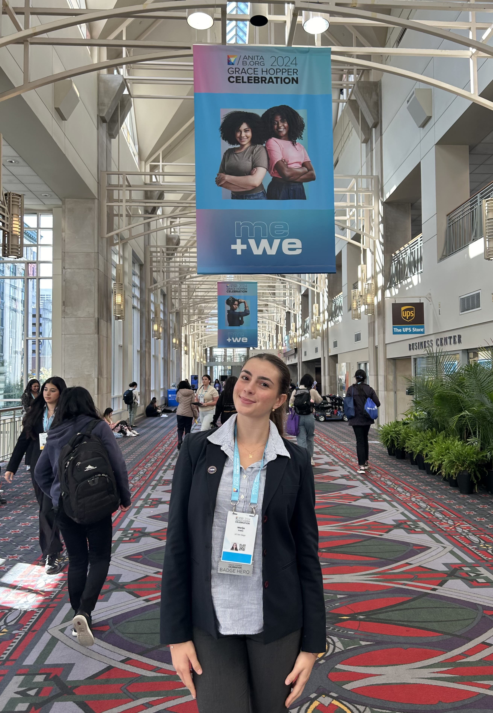

Hi there! My name is Marija Vukic, and I'm a Croatian-American pursuing a degree in Data Science with a minor in Applied Mathematics at UC San Diego. I'm passionate about sharing my Croatian heritage and learning about the narratives that have shaped others into who they are today. For me, Data Science is a way to explore patterns—whether in culture, history, relationships, economics, or beyond—while combining my curiosity for disciplines such as statistics and coding.
This past September, I was given the opportunity to attend the Grace Hopper Celebration in Pennsylvania. It was an amazing experience and the first conference I have attended during my data science career.
